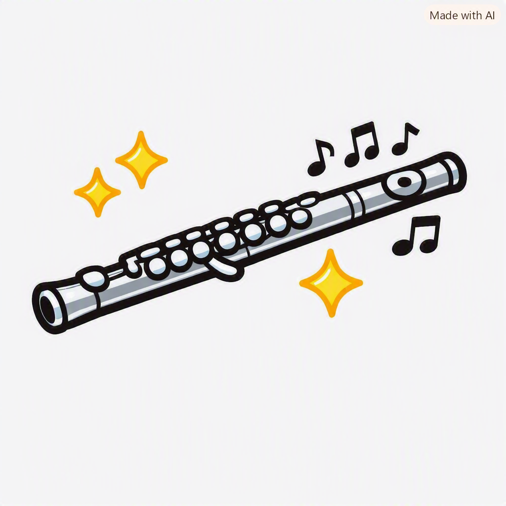
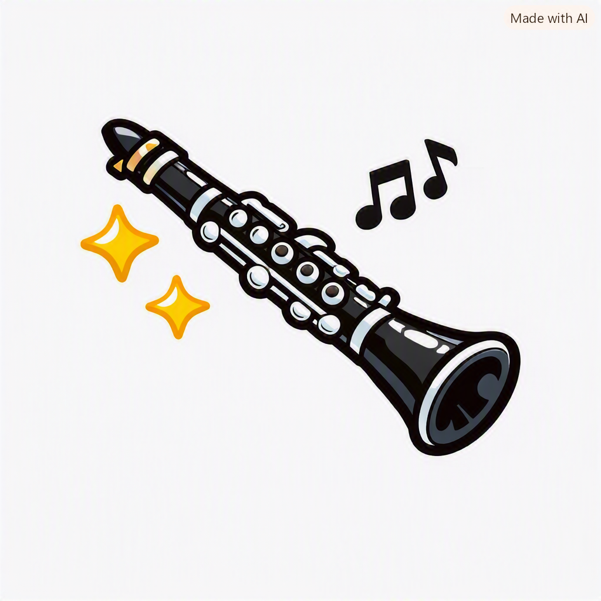
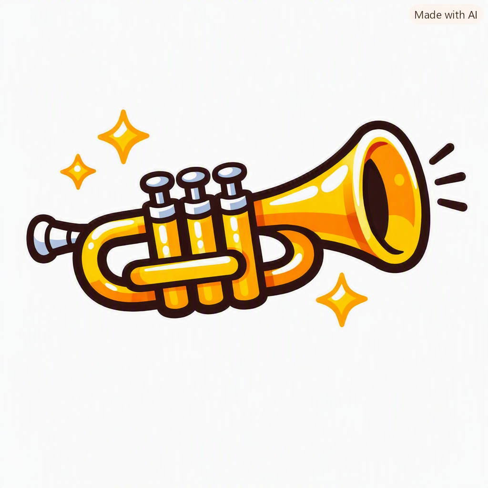
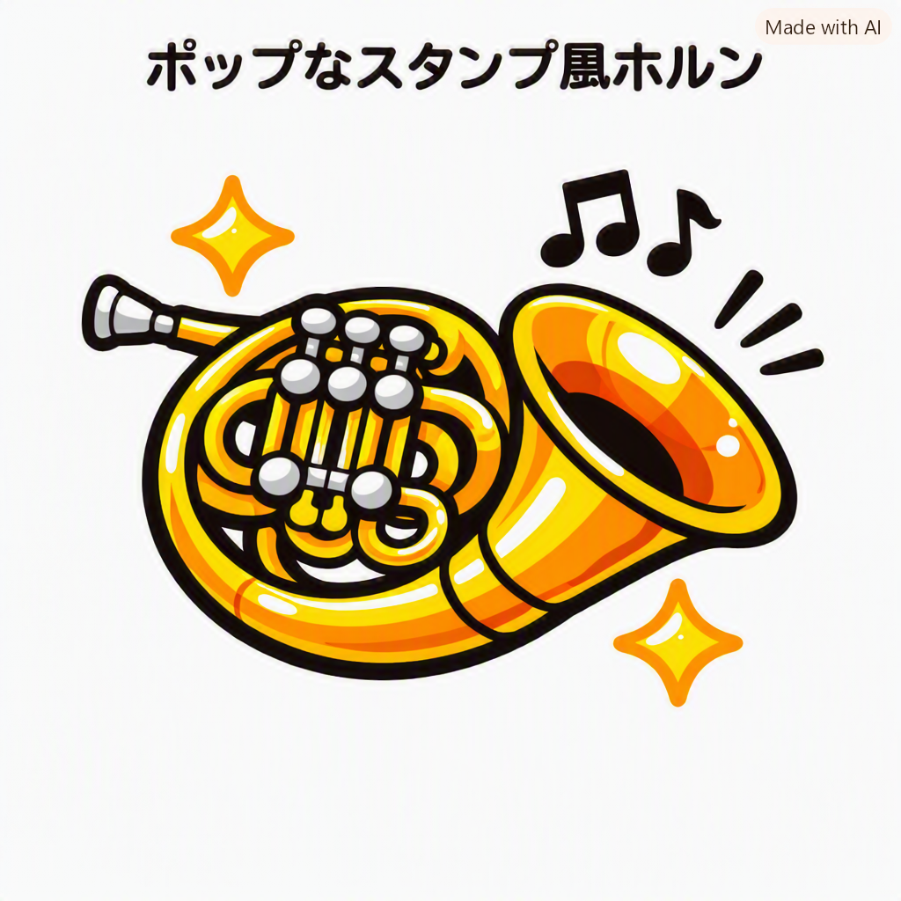
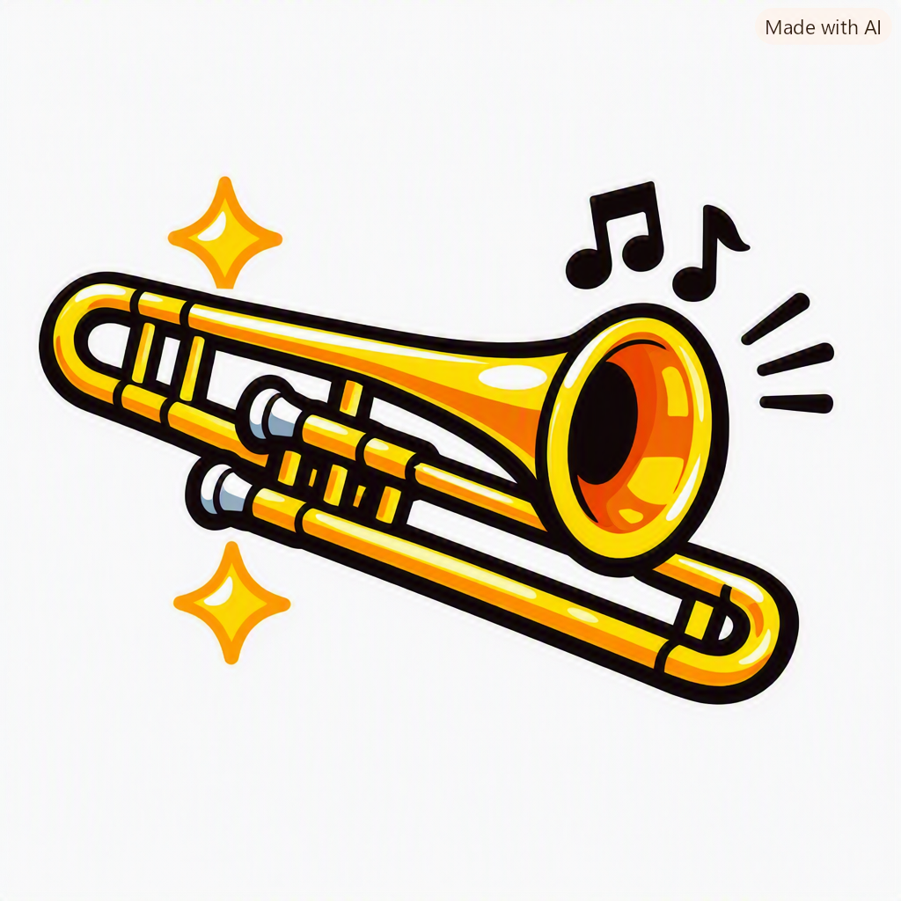
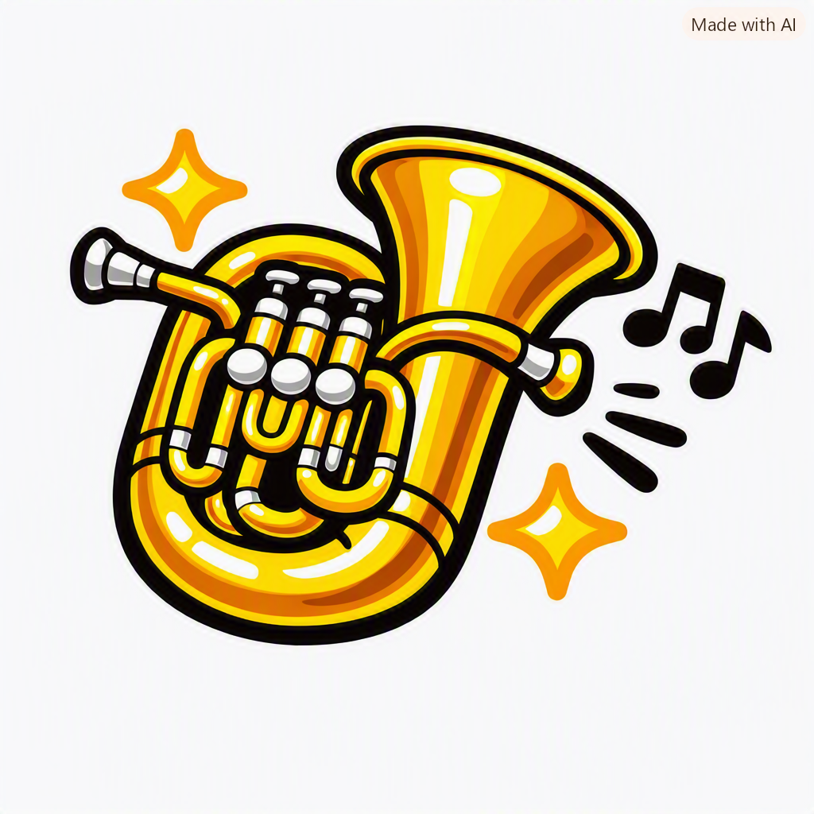
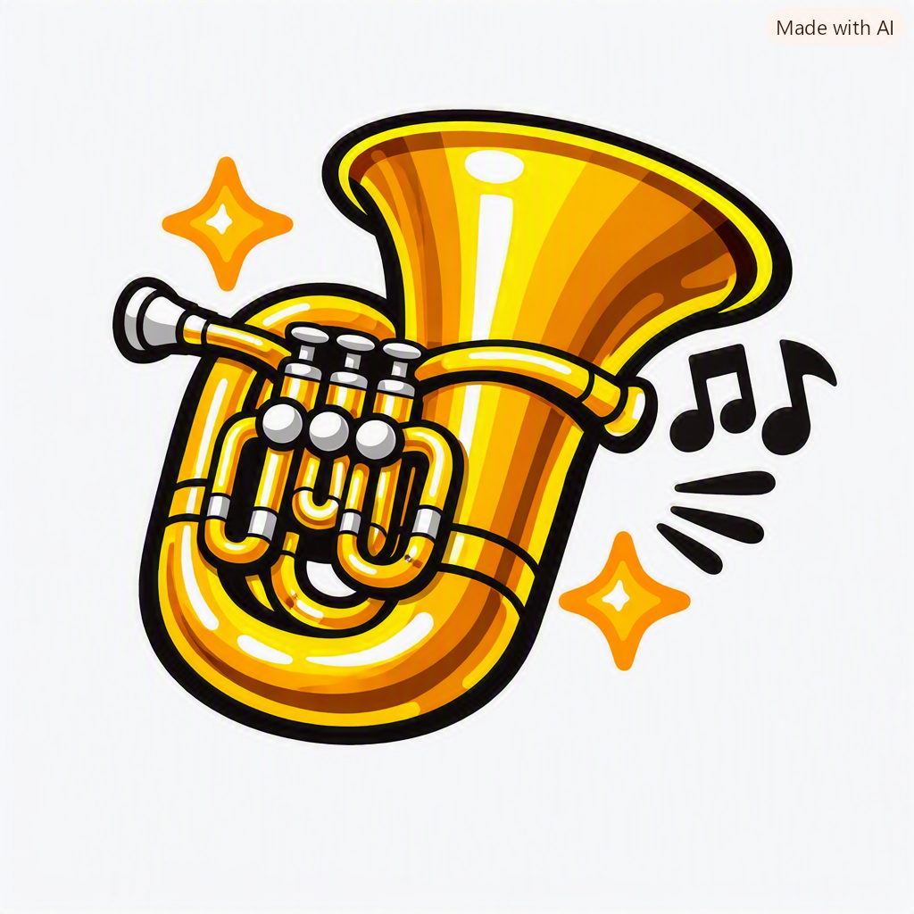
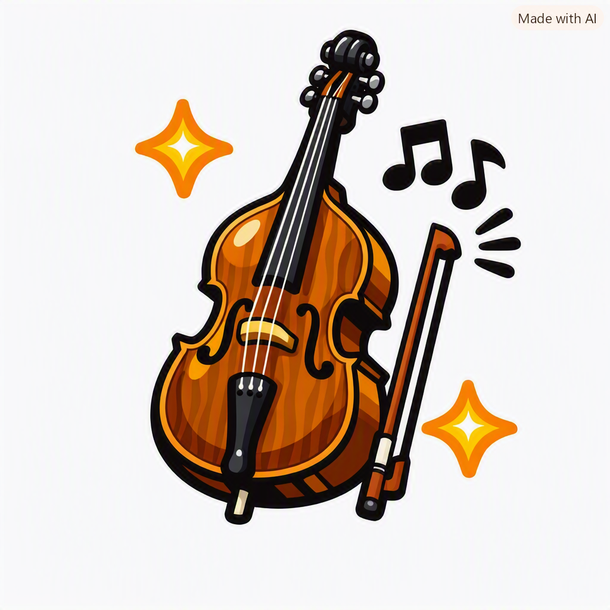

鹿児島市立谷山中学校


皆さま、本日は谷山中学校吹奏楽部の定期演奏会にお越しいただき、ありがとうございます。
顧問の島崎英子です。
今朝、生徒から「先生、今日は指揮棒だけは絶対忘れないでね！」と念押しされました。
……心配される先生でいいのでしょうか。
でも、ちゃんと持ってきていますのでご安心ください。
吹奏楽は、音だけでなく“仲間の優しさ”が響く世界です。
どうぞ最後まで、温かくお楽しみください。
副顧問の二川加奈美です。
毎日の練習で聞こえてくる音は、少しずつですが確実に重なり合って、今日のこの舞台につながっています。
どうか温かい拍手で見守っていただけたら嬉しいです。
副顧問の宮之原せつみです。
微笑ましい毎日を経て、生徒たちは今日という日を迎えました。
最後まで、どうぞごゆっくりお楽しみください。
★パートリーダー
★楽器のイラストをタップでもOK！
🎵フルート（Fl）
🎵クラリネット（Cl / Bcl）
🎵トランペット（Tp）
🎵ホルン（Hr）
🎵トロンボーン（Tb）
🎵ユーフォニウム（Euph）
🎵チューバ（Tub）
🎵ストリングベース（Sbsss）★2025年～2026年